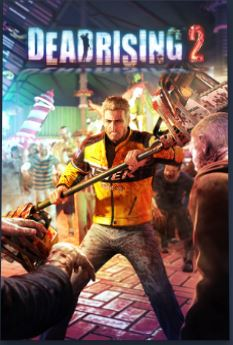
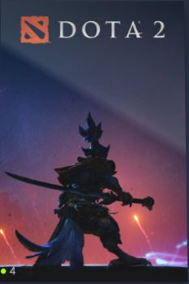
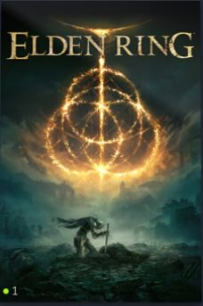
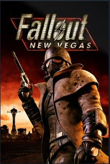
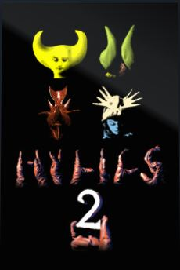
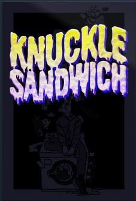

Gaming has been a significant part of my life, evolving from a hobby to a lifestyle. I picked up a Super Nintendo controller at the age of three, and it became my escape from the challenges at home. Today, gaming is a way for me to connect with others. Whether it's multiplayer, single-player, story-driven, or action-based, I enjoy it all as long as it's engaging.
 I've watched game reviewers for years and considered creating my content. However, I decided to pursue a college certificate in game creation instead. Currently, I'm working on a project with a friend, hoping it will lead to more opportunities in the future. I've designed board games, written game scripts, and learned a lot about the creative process. Although the technical side can be challenging, the joy of bringing a game idea to life is worth it.
 One of the best parts about gaming is that it helps me meet new people. Whether I'm playing online with friends or joining a gaming community, it gives me a chance to connect with others who share my interests. I've made some great friends through gaming, and we enjoy playing together and talking about our favorite games.
 Gaming is also a creative outlet for me. I've spent time designing board games and writing scripts for video games. These projects help me think creatively and solve problems. Even though the technical side of game development can be hard, it's rewarding to see my ideas come to life. I'm currently working on a game project with a friend, and we're excited about what we can create together.